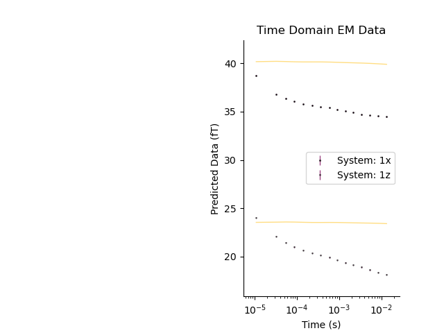

Note
Go to the end to download the full example code.
Tempest Datapoint Class
Credits: We would like to thank Ross Brodie at Geoscience Australia for his airborne time domain forward modeller https://github.com/GeoscienceAustralia/ga-aem
For ground-based time domain data, we are using Dieter Werthmuller’s python package Empymod https://empymod.github.io/
Thanks to Dieter for his help getting Empymod ready for incorporation into GeoBIPy
from os.path import join
import numpy as np
import h5py
import matplotlib.pyplot as plt
from geobipy import TempestData
# from geobipy import TemDataPoint
from geobipy import RectilinearMesh1D
from geobipy import Model
from geobipy import StatArray
from geobipy import Distribution
from geobipy import get_prng
dataFolder = "..//..//supplementary//data//"
# dataFolder = "source//examples//supplementary//Data"
# Obtaining a tempest datapoint from a dataset
# ++++++++++++++++++++++++++++++++++++++++++++
# More often than not, our observed data is stored in a file on disk.
# We can read in a dataset and pull datapoints from it.
#
# For more information about the time domain data set, see :ref:`Time domain dataset`
# The data file name
dataFile = dataFolder + 'tempest_saline_clay.csv'
# The EM system file name
systemFile = dataFolder + 'Tempest.stm'
# Prepare the dataset so that we can read a point at a time.
Dataset = TempestData._initialize_sequential_reading(dataFile, systemFile)
# Get a datapoint from the file.
tdp = Dataset._read_record(0)
plt.figure()
tdp.plot()
prng = get_prng(seed=146100583096709124601953385843316024947)
self.n_components=2, self.nTimes=array([15])
self.n_components=2, self.nTimes=array([15])
self.n_components=2, self.nTimes=array([15])
self.n_components=2, self.nTimes=array([15])
self.n_components=2, self.nTimes=array([15])
self.n_components=2, self.nTimes=array([15])
self.n_components=2, self.nTimes=array([15])
self.n_components=2, self.nTimes=array([15])
self.n_components=2, self.nTimes=array([15])
self.n_components=2, self.nTimes=array([15])
self.n_components=2, self.nTimes=array([15])
Using a tempest domain datapoint
We can define a 1D layered earth model, and use it to predict some data
par = StatArray(np.r_[0.01, 0.1, 1.], "Conductivity", "$\frac{S}{m}$")
mod = Model(mesh=RectilinearMesh1D(edges=np.r_[0.0, 50.0, 75.0, np.inf]), values=par)
par = StatArray(np.logspace(-3, 3, 30), "Conductivity", "$\frac{S}{m}$")
e = np.linspace(0, 350, 31); e[-1] = np.inf
mod = Model(mesh=RectilinearMesh1D(edges=e), values=par)
Forward model the data
tdp.forward(mod)
print('primary', tdp.primary_field)
print('sx', tdp.secondary_field[:15])
print('sz', tdp.secondary_field[15:])
# #%%
# plt.figure()
# plt.subplot(121)
# _ = mod.pcolor(transpose=True)
# plt.subplot(122)
# _ = tdp.plot()
# _ = tdp.plot_predicted()
# plt.tight_layout()
# plt.suptitle('Model and response')
# #%%
# # plt.figure()
# # tdp.plotDataResidual(xscale='log')
# # plt.title('data residual')
# #%%
# # Compute the sensitivity matrix for a given model
J = tdp.sensitivity(mod)
# plt.figure()
# _ = np.abs(J).pcolor(equalize=True, log=10, flipY=True)
print('J', J)
# print('J shape', J.shape)
# print('sx 0', J[:16, 0])
tdp.fm_dlogc(mod)
print('new primary', tdp.primary_field)
print('sx', tdp.secondary_field[:15])
print('sz', tdp.secondary_field[15:])
print('new J', tdp.sensitivity_matrix)
primary [34.27253219 17.55503397]
sx [4.46362582 2.52720951 2.10544857 1.76862398 1.52893914 1.38117676
1.19246619 1.10920301 0.94437018 0.81202664 0.67054942 0.4124596
0.34346631 0.27359586 0.19875285]
sz [6.47100177 4.53101158 3.87594468 3.43396174 3.10487058 2.80230168
2.59759025 2.34406113 2.09040444 1.83288007 1.59137993 1.34037776
1.05345525 0.79969548 0.56994112]
J [[ 1.13463137e-01 1.49920887e-01 1.76789170e-01 1.79809001e-01
1.49232157e-01 9.28385121e-02 3.82492975e-02 8.70404368e-03
7.17305034e-04 -2.13238764e-04 -3.69663472e-04 -5.69915094e-04
-8.66319388e-04 -1.29165072e-03 -1.87152454e-03 -2.59562194e-03
-3.36123923e-03 -3.90030818e-03 -3.77459399e-03 -2.64263369e-03
-8.86540172e-04 2.51618719e-04 2.30305587e-04 -6.44400641e-06
-7.48897278e-06 7.03319747e-07 -1.06012557e-08 -1.01809840e-09
1.13341751e-11 7.27489718e-13]
[ 2.09383016e-02 3.20412212e-02 4.74815387e-02 6.68394476e-02
8.66127424e-02 9.82359342e-02 9.01124001e-02 5.92842924e-02
2.34205425e-02 4.15453831e-03 -1.09167097e-04 -5.65296487e-04
-8.64759189e-04 -1.28934957e-03 -1.86840434e-03 -2.59169317e-03
-3.35694331e-03 -3.89678338e-03 -3.77361484e-03 -2.64536287e-03
-8.91147400e-04 2.49122146e-04 2.30371889e-04 -6.22013409e-06
-7.50559762e-06 7.02225318e-07 -1.04664062e-08 -1.02489023e-09
1.15994185e-11 7.25910166e-13]
[ 1.04188675e-02 1.61552555e-02 2.45575508e-02 3.61804723e-02
5.07045737e-02 6.55611414e-02 7.44548187e-02 6.86847323e-02
4.55777737e-02 1.80379279e-02 2.98696559e-03 -3.85293966e-04
-8.60809279e-04 -1.28714626e-03 -1.86528098e-03 -2.58777374e-03
-3.35265612e-03 -3.89326199e-03 -3.77262920e-03 -2.64807737e-03
-8.95745356e-04 2.46622607e-04 2.30434500e-04 -5.99618798e-06
-7.52209743e-06 7.01118939e-07 -1.03312747e-08 -1.03167228e-09
1.18645190e-11 7.24296662e-13]
[ 5.59306619e-03 8.73427922e-03 1.34567371e-02 2.03060295e-02
2.96541856e-02 4.11011150e-02 5.23902533e-02 5.84048942e-02
5.26194169e-02 3.39153269e-02 1.29270864e-02 1.84115255e-03
-7.26349266e-04 -1.28187560e-03 -1.86068331e-03 -2.58190508e-03
-3.34624172e-03 -3.88798693e-03 -3.77113807e-03 -2.65212048e-03
-9.02624129e-04 2.42867556e-04 2.30521193e-04 -5.66013350e-06
-7.54660150e-06 6.99435958e-07 -1.01280238e-08 -1.04182633e-09
1.22618909e-11 7.21872310e-13]
[ 2.90057967e-03 4.55298073e-03 7.08113868e-03 1.08624892e-02
1.63131443e-02 2.36956230e-02 3.26444333e-02 4.13290515e-02
4.57247118e-02 4.08416457e-02 2.60308912e-02 9.65207055e-03
9.85979321e-04 -1.17532082e-03 -1.85153793e-03 -2.57222629e-03
-3.33558713e-03 -3.87921268e-03 -3.76862112e-03 -2.65878596e-03
-9.14042109e-04 2.36594638e-04 2.30647153e-04 -5.09972880e-06
-7.58680811e-06 6.96570853e-07 -9.78784817e-09 -1.05870121e-09
1.29234653e-11 7.17787479e-13]
[ 1.52006455e-03 2.39426129e-03 3.74644180e-03 5.80697177e-03
8.87383693e-03 1.32671851e-02 1.91687386e-02 2.62386370e-02
3.29616199e-02 3.61240640e-02 3.18888293e-02 1.99839155e-02
7.06087232e-03 1.66263257e-04 -1.75822596e-03 -2.55553075e-03
-3.31861213e-03 -3.86514848e-03 -3.76449138e-03 -2.66930910e-03
-9.32273995e-04 2.26471992e-04 2.30800241e-04 -4.19807425e-06
-7.64974377e-06 6.91803908e-07 -9.23713659e-09 -1.08570231e-09
1.39851809e-11 7.11116040e-13]
[ 7.95172245e-04 1.25562666e-03 1.97296556e-03 3.07922945e-03
4.75914088e-03 7.24897325e-03 1.07971005e-02 1.55309299e-02
2.11471314e-02 2.63969405e-02 2.87019743e-02 2.50612120e-02
1.53752412e-02 4.96252008e-03 -6.93865522e-04 -2.46676098e-03
-3.29044003e-03 -3.84255990e-03 -3.75760102e-03 -2.68583695e-03
-9.61436534e-04 2.10008122e-04 2.30920381e-04 -2.73869233e-06
-7.74706913e-06 6.83678713e-07 -8.33661124e-09 -1.12904183e-09
1.56973846e-11 7.00029332e-13]
[ 4.25261235e-04 6.72742356e-04 1.06013791e-03 1.66216067e-03
2.58781456e-03 3.98821239e-03 6.05390242e-03 8.97919887e-03
1.28478445e-02 1.73740944e-02 2.14865063e-02 2.30512177e-02
1.96897031e-02 1.15139729e-02 2.96683343e-03 -1.66596036e-03
-3.20516657e-03 -3.80728921e-03 -3.74651522e-03 -2.71020663e-03
-1.00569525e-03 1.84371944e-04 2.30799698e-04 -4.84184630e-07
-7.88644214e-06 6.70126101e-07 -6.92193641e-09 -1.19519648e-09
1.83301097e-11 6.82210948e-13]
[ 2.34933380e-04 3.72120311e-04 5.87563585e-04 9.24055086e-04
1.44556439e-03 2.24464388e-03 3.44801505e-03 5.21202871e-03
7.68804416e-03 1.09185107e-02 1.46108113e-02 1.77928517e-02
1.86360965e-02 1.52676336e-02 8.10520819e-03 1.04131721e-03
-2.63131518e-03 -3.73025495e-03 -3.72857047e-03 -2.74413358e-03
-1.07006043e-03 1.45642247e-04 2.29929941e-04 2.87848665e-06
-8.06931787e-06 6.47601643e-07 -4.75428545e-09 -1.29229582e-09
2.22379274e-11 6.53984309e-13]
[ 1.30756207e-04 2.07280357e-04 3.27738594e-04 5.16541357e-04
8.10756512e-04 1.26542784e-03 1.95946411e-03 2.99935495e-03
4.51300993e-03 6.61582186e-03 9.31508227e-03 1.23107970e-02
1.47115349e-02 1.49431150e-02 1.15588764e-02 5.23660250e-03
-5.73138740e-04 -3.30841709e-03 -3.68438731e-03 -2.79051701e-03
-1.16480763e-03 8.53486040e-05 2.27003150e-04 8.00168945e-06
-8.28895296e-06 6.07735187e-07 -1.30360184e-09 -1.43725413e-09
2.81764182e-11 6.06718206e-13]
[ 7.22510490e-05 1.14578847e-04 1.81325240e-04 2.86211332e-04
4.50297609e-04 7.05396979e-04 1.09843511e-03 1.69603618e-03
2.58670571e-03 3.87354585e-03 5.64161145e-03 7.87098502e-03
1.02631180e-02 1.20097562e-02 1.17690090e-02 8.45394621e-03
2.93181526e-03 -1.70637976e-03 -3.39858476e-03 -2.84225442e-03
-1.30307918e-03 -1.03503204e-05 2.18657320e-04 1.58217247e-05
-8.47882767e-06 5.32996039e-07 4.34656784e-09 -1.65220866e-09
3.72779086e-11 5.22736206e-13]
[ 3.95026702e-05 6.26387983e-05 9.91713508e-05 1.56690100e-04
2.46931485e-04 3.87830492e-04 6.06339421e-04 9.41941625e-04
1.45012168e-03 2.20331827e-03 3.28295938e-03 4.74864806e-03
6.56022990e-03 8.42866192e-03 9.63261572e-03 9.04853595e-03
5.90657380e-03 1.23034377e-03 -2.18521995e-03 -2.74868554e-03
-1.49123522e-03 -1.61531888e-04 1.96768608e-04 2.72584271e-05
-8.38949284e-06 3.88493568e-07 1.35446119e-08 -1.94849087e-09
5.08041309e-11 3.64993874e-13]
[ 2.13302188e-05 3.38065070e-05 5.35289820e-05 8.46302466e-05
1.33533863e-04 2.10135477e-04 3.29495064e-04 5.14128716e-04
7.96786401e-04 1.22298690e-03 1.85102174e-03 2.74369919e-03
3.93975771e-03 5.38502235e-03 6.80696424e-03 7.57576392e-03
6.78053378e-03 3.94457111e-03 2.15665526e-04 -1.95254195e-03
-1.62830063e-03 -3.90294330e-04 1.43098447e-04 4.19348826e-05
-7.33235638e-06 1.17651461e-07 2.68312100e-08 -2.22584790e-09
6.77078320e-11 6.05952429e-14]
[ 1.12282264e-05 1.78635903e-05 2.83779899e-05 4.50017482e-05
7.12127249e-05 1.12398570e-04 1.76830540e-04 2.77044763e-04
4.31681368e-04 6.67639104e-04 1.02184383e-03 1.54055267e-03
2.27116188e-03 3.23625864e-03 4.37388475e-03 5.43408279e-03
5.87962823e-03 5.00262101e-03 2.59289849e-03 -1.49287398e-04
-1.27340318e-03 -6.43452187e-04 2.61268892e-05 5.34053467e-05
-3.94810565e-06 -3.05244973e-07 3.82165478e-08 -1.98123010e-09
7.45275097e-11 -4.39700593e-13]
[-1.11093671e-07 7.10535889e-06 1.35366601e-05 2.19781779e-05
3.51361530e-05 5.59144579e-05 8.85688469e-05 1.39638386e-04
2.19017512e-04 3.41374294e-04 5.27767291e-04 8.06871862e-04
1.21409005e-03 1.78443357e-03 2.53102265e-03 3.39739027e-03
4.17930449e-03 4.46028641e-03 3.73004540e-03 1.92649310e-03
6.02109747e-05 -5.46118843e-04 -1.65157591e-04 3.49402847e-05
3.51467636e-06 -6.95157016e-07 2.72069882e-08 -1.89202945e-10
2.98055790e-11 -8.12511279e-13]
[ 1.60115776e-01 2.07639005e-01 2.40739052e-01 2.40418419e-01
1.95315442e-01 1.18491902e-01 4.73745473e-02 1.02531362e-02
4.69362345e-04 -8.07910478e-04 -1.28235918e-03 -1.94787493e-03
-2.91478879e-03 -4.27143769e-03 -6.07088001e-03 -8.23824413e-03
-1.04051447e-02 -1.17238309e-02 -1.09338137e-02 -7.24529691e-03
-2.09096265e-03 9.16106903e-04 6.40571274e-04 -3.66220252e-05
-1.99238748e-05 2.10579717e-06 -4.09112096e-08 -2.42384411e-09
9.13480086e-12 2.32731922e-12]
[ 3.99049002e-02 5.96318887e-02 8.59664978e-02 1.17218850e-01
1.46454033e-01 1.59425949e-01 1.39779316e-01 8.75691904e-02
3.26948727e-02 5.05097075e-03 -9.50475020e-04 -1.94008031e-03
-2.91003069e-03 -4.26459057e-03 -6.06176966e-03 -8.22717236e-03
-1.03937132e-02 -1.17155821e-02 -1.09336607e-02 -7.25551303e-03
-2.10499275e-03 9.09398001e-04 6.41073913e-04 -3.59986191e-05
-1.99811866e-05 2.10354294e-06 -4.05254837e-08 -2.44562026e-09
9.94338045e-12 2.32347000e-12]
[ 2.16198667e-02 3.28716981e-02 4.88428050e-02 7.00790633e-02
9.52414896e-02 1.18873805e-01 1.29690843e-01 1.14383571e-01
7.21782301e-02 2.67964266e-02 3.52733196e-03 -1.69518035e-03
-2.90192906e-03 -4.25790316e-03 -6.05267040e-03 -8.21612440e-03
-1.03823020e-02 -1.17073359e-02 -1.09334821e-02 -7.26568542e-03
-2.11900043e-03 9.02677484e-04 6.41566168e-04 -3.53746867e-05
-2.00381687e-05 2.10125370e-06 -4.01388440e-08 -2.46737314e-09
1.07518133e-11 2.31958355e-12]
[ 1.24091321e-02 1.90564608e-02 2.87983061e-02 4.24941186e-02
6.04667325e-02 8.13351045e-02 1.00186303e-01 1.07452619e-01
9.27111100e-02 5.68740221e-02 2.01638666e-02 1.75813947e-03
-2.70249482e-03 -4.24495952e-03 -6.03917855e-03 -8.19959261e-03
-1.03652224e-02 -1.16949726e-02 -1.09331643e-02 -7.28085871e-03
-2.13996801e-03 8.92574157e-04 6.42284216e-04 -3.44377831e-05
-2.01229935e-05 2.09775124e-06 -3.95570901e-08 -2.49995719e-09
1.19641780e-11 2.31371842e-12]
[ 6.87159982e-03 1.06324798e-02 1.62674299e-02 2.44871980e-02
3.59798522e-02 5.09597818e-02 6.81957311e-02 8.35225080e-02
8.90014884e-02 7.61884128e-02 4.61438285e-02 1.56180977e-02
1.32114555e-04 -4.07104257e-03 -6.01438026e-03 -8.17225661e-03
-1.03368472e-02 -1.16743805e-02 -1.09325083e-02 -7.30592964e-03
-2.17480092e-03 8.75678068e-04 6.43428763e-04 -3.28737917e-05
-2.02626942e-05 2.09173742e-06 -3.85828775e-08 -2.55414876e-09
1.39840656e-11 2.30379831e-12]
[ 3.82116333e-03 5.94406923e-03 9.17070818e-03 1.39871419e-02
2.09813107e-02 3.07053382e-02 4.32855595e-02 5.76022800e-02
7.00703384e-02 7.40359904e-02 6.26565252e-02 3.71815296e-02
1.15702573e-02 -1.69857971e-03 -5.84363357e-03 -8.12650040e-03
-1.02915657e-02 -1.16413079e-02 -1.09311212e-02 -7.34565975e-03
-2.23049839e-03 8.48364443e-04 6.45129429e-04 -3.03531360e-05
-2.04827781e-05 2.08159694e-06 -3.70042389e-08 -2.64096811e-09
1.72295320e-11 2.28750613e-12]
[ 2.11278271e-03 3.29974701e-03 5.12169089e-03 7.88335047e-03
1.19925627e-02 1.79371609e-02 2.61634885e-02 3.67410000e-02
4.86692847e-02 5.88706114e-02 6.17401348e-02 5.16334079e-02
2.97676770e-02 7.84982402e-03 -3.83602557e-03 -7.94329070e-03
-1.02171873e-02 -1.15879985e-02 -1.09280378e-02 -7.40844285e-03
-2.31978636e-03 8.03816816e-04 6.47519482e-04 -2.62622224e-05
-2.08268690e-05 2.06397280e-06 -3.44189048e-08 -2.78060500e-09
2.24734966e-11 2.26025209e-12]
[ 1.18787916e-03 1.86079679e-03 2.90072503e-03 4.49316096e-03
6.89992517e-03 1.04683047e-02 1.56072826e-02 2.26762962e-02
3.16873527e-02 4.17028524e-02 4.99874496e-02 5.17013957e-02
4.21733381e-02 2.28200440e-02 3.82984440e-03 -6.33720101e-03
-1.00245588e-02 -1.15046567e-02 -1.09214085e-02 -7.50193333e-03
-2.45576522e-03 7.34156901e-04 6.50341911e-04 -1.99157631e-05
-2.13290962e-05 2.03378663e-06 -3.03475874e-08 -2.99444288e-09
3.05612182e-11 2.21589868e-12]
[ 6.85874915e-04 1.07682023e-03 1.68386072e-03 2.61987206e-03
4.04914185e-03 6.20161303e-03 9.37821632e-03 1.39243312e-02
2.01215828e-02 2.79102957e-02 3.63473409e-02 4.28853433e-02
4.32376197e-02 3.36297749e-02 1.60073986e-02 -4.06785684e-04
-8.80728389e-03 -1.13318343e-02 -1.09066424e-02 -7.63408387e-03
-2.65456561e-03 6.28266935e-04 6.52593634e-04 -1.03896087e-05
-2.20113234e-05 1.98192000e-06 -2.40851870e-08 -3.30993214e-09
4.26225630e-11 2.14448663e-12]
[ 3.97492384e-04 6.25157499e-04 9.79921161e-04 1.52970807e-03
2.37536579e-03 3.66271307e-03 5.59386199e-03 8.42905152e-03
1.24572773e-02 1.78898983e-02 2.45996014e-02 3.16300164e-02
3.65896683e-02 3.56805170e-02 2.59498079e-02 9.86642743e-03
-4.10943284e-03 -1.04067976e-02 -1.08453857e-02 -7.81980250e-03
-2.94955068e-03 4.61942047e-04 6.51481607e-04 4.26410089e-06
-2.28927981e-05 1.88642473e-06 -1.40539393e-08 -3.78496662e-09
6.10881749e-11 2.02231492e-12]
[ 2.28080390e-04 3.59214465e-04 5.64123292e-04 8.82901267e-04
1.37590272e-03 2.13229122e-03 3.28010534e-03 4.99495403e-03
7.49889373e-03 1.10291699e-02 1.57351196e-02 2.14354311e-02
2.71796318e-02 3.07485869e-02 2.88194031e-02 1.91824631e-02
4.74579200e-03 -6.62815391e-03 -1.02522566e-02 -8.05421115e-03
-3.38560057e-03 1.94539854e-04 6.38800599e-04 2.69696365e-05
-2.38478094e-05 1.69920478e-06 2.54712999e-09 -4.50079969e-09
8.97509521e-11 1.79896722e-12]
[ 1.29157970e-04 2.03638462e-04 3.20279179e-04 5.02283991e-04
7.84929060e-04 1.22110741e-03 1.88855988e-03 2.89810780e-03
4.40002044e-03 6.58049511e-03 9.62949036e-03 1.36425076e-02
1.83983022e-02 2.29735567e-02 2.53448895e-02 2.26700994e-02
1.34473467e-02 9.93070247e-04 -7.36015610e-03 -7.99203352e-03
-3.99599890e-03 -2.35776594e-04 5.92920699e-04 6.10047295e-05
-2.42531710e-05 1.31928881e-06 3.00943322e-08 -5.52361380e-09
1.33382890e-10 1.36385417e-12]
[ 7.20880061e-05 1.13758034e-04 1.79138645e-04 2.81407647e-04
4.40747144e-04 6.87743061e-04 1.06807700e-03 1.64853558e-03
2.52359197e-03 3.81977707e-03 5.69034409e-03 8.28314284e-03
1.16486754e-02 1.55401010e-02 1.90830522e-02 2.04784376e-02
1.73880609e-02 9.00684847e-03 -1.02276636e-03 -6.16193045e-03
-4.55276841e-03 -9.05861401e-04 4.62099921e-04 1.06772207e-04
-2.22070456e-05 5.69979180e-07 7.14251079e-08 -6.62044639e-09
1.91310127e-10 4.83737910e-13]
[ 3.95655826e-05 6.25753935e-05 9.87713313e-05 1.55544424e-04
2.44279987e-04 3.82372569e-04 5.96103961e-04 9.24568516e-04
1.42459850e-03 2.17591241e-03 3.28383735e-03 4.87272362e-03
7.05478183e-03 9.84575428e-03 1.29883829e-02 1.56762996e-02
1.63521364e-02 1.31874963e-02 6.03082080e-03 -1.38179333e-03
-3.86761777e-03 -1.71060819e-03 1.49403391e-04 1.48327671e-04
-1.36249992e-05 -6.68291558e-07 1.10857913e-07 -6.33418159e-09
2.26727066e-10 -1.05451995e-12]
[ 1.60007270e-05 3.08385747e-05 5.05626410e-05 8.02783444e-05
1.26736452e-04 1.99365944e-04 3.12397549e-04 4.87311178e-04
7.55978090e-04 1.16456467e-03 1.77748717e-03 2.67915445e-03
3.96768519e-03 5.72788161e-03 7.96032467e-03 1.04376098e-02
1.24913986e-02 1.28874625e-02 1.02847605e-02 4.83824498e-03
-3.09434558e-04 -1.64870226e-03 -4.15885174e-04 1.11378943e-04
7.62988405e-06 -1.95004388e-06 8.68582964e-08 -1.28316523e-09
1.11041966e-10 -2.41585978e-12]]
new primary [34.27253219 17.55503397]
sx [4.46362582 2.52720951 2.10544857 1.76862398 1.52893914 1.38117676
1.19246619 1.10920301 0.94437018 0.81202664 0.67054942 0.4124596
0.34346631 0.27359586 0.19875285]
sz [6.47100177 4.53101158 3.87594468 3.43396174 3.10487058 2.80230168
2.59759025 2.34406113 2.09040444 1.83288007 1.59137993 1.34037776
1.05345525 0.79969548 0.56994112]
new J [[ 1.13463137e-01 1.49920887e-01 1.76789170e-01 1.79809001e-01
1.49232157e-01 9.28385121e-02 3.82492975e-02 8.70404368e-03
7.17305034e-04 -2.13238764e-04 -3.69663472e-04 -5.69915094e-04
-8.66319388e-04 -1.29165072e-03 -1.87152454e-03 -2.59562194e-03
-3.36123923e-03 -3.90030818e-03 -3.77459399e-03 -2.64263369e-03
-8.86540172e-04 2.51618719e-04 2.30305587e-04 -6.44400641e-06
-7.48897278e-06 7.03319747e-07 -1.06012557e-08 -1.01809840e-09
1.13341751e-11 7.27489718e-13]
[ 2.09383016e-02 3.20412212e-02 4.74815387e-02 6.68394476e-02
8.66127424e-02 9.82359342e-02 9.01124001e-02 5.92842924e-02
2.34205425e-02 4.15453831e-03 -1.09167097e-04 -5.65296487e-04
-8.64759189e-04 -1.28934957e-03 -1.86840434e-03 -2.59169317e-03
-3.35694331e-03 -3.89678338e-03 -3.77361484e-03 -2.64536287e-03
-8.91147400e-04 2.49122146e-04 2.30371889e-04 -6.22013409e-06
-7.50559762e-06 7.02225318e-07 -1.04664062e-08 -1.02489023e-09
1.15994185e-11 7.25910166e-13]
[ 1.04188675e-02 1.61552555e-02 2.45575508e-02 3.61804723e-02
5.07045737e-02 6.55611414e-02 7.44548187e-02 6.86847323e-02
4.55777737e-02 1.80379279e-02 2.98696559e-03 -3.85293966e-04
-8.60809279e-04 -1.28714626e-03 -1.86528098e-03 -2.58777374e-03
-3.35265612e-03 -3.89326199e-03 -3.77262920e-03 -2.64807737e-03
-8.95745356e-04 2.46622607e-04 2.30434500e-04 -5.99618798e-06
-7.52209743e-06 7.01118939e-07 -1.03312747e-08 -1.03167228e-09
1.18645190e-11 7.24296662e-13]
[ 5.59306619e-03 8.73427922e-03 1.34567371e-02 2.03060295e-02
2.96541856e-02 4.11011150e-02 5.23902533e-02 5.84048942e-02
5.26194169e-02 3.39153269e-02 1.29270864e-02 1.84115255e-03
-7.26349266e-04 -1.28187560e-03 -1.86068331e-03 -2.58190508e-03
-3.34624172e-03 -3.88798693e-03 -3.77113807e-03 -2.65212048e-03
-9.02624129e-04 2.42867556e-04 2.30521193e-04 -5.66013350e-06
-7.54660150e-06 6.99435958e-07 -1.01280238e-08 -1.04182633e-09
1.22618909e-11 7.21872310e-13]
[ 2.90057967e-03 4.55298073e-03 7.08113868e-03 1.08624892e-02
1.63131443e-02 2.36956230e-02 3.26444333e-02 4.13290515e-02
4.57247118e-02 4.08416457e-02 2.60308912e-02 9.65207055e-03
9.85979321e-04 -1.17532082e-03 -1.85153793e-03 -2.57222629e-03
-3.33558713e-03 -3.87921268e-03 -3.76862112e-03 -2.65878596e-03
-9.14042109e-04 2.36594638e-04 2.30647153e-04 -5.09972880e-06
-7.58680811e-06 6.96570853e-07 -9.78784817e-09 -1.05870121e-09
1.29234653e-11 7.17787479e-13]
[ 1.52006455e-03 2.39426129e-03 3.74644180e-03 5.80697177e-03
8.87383693e-03 1.32671851e-02 1.91687386e-02 2.62386370e-02
3.29616199e-02 3.61240640e-02 3.18888293e-02 1.99839155e-02
7.06087232e-03 1.66263257e-04 -1.75822596e-03 -2.55553075e-03
-3.31861213e-03 -3.86514848e-03 -3.76449138e-03 -2.66930910e-03
-9.32273995e-04 2.26471992e-04 2.30800241e-04 -4.19807425e-06
-7.64974377e-06 6.91803908e-07 -9.23713659e-09 -1.08570231e-09
1.39851809e-11 7.11116040e-13]
[ 7.95172245e-04 1.25562666e-03 1.97296556e-03 3.07922945e-03
4.75914088e-03 7.24897325e-03 1.07971005e-02 1.55309299e-02
2.11471314e-02 2.63969405e-02 2.87019743e-02 2.50612120e-02
1.53752412e-02 4.96252008e-03 -6.93865522e-04 -2.46676098e-03
-3.29044003e-03 -3.84255990e-03 -3.75760102e-03 -2.68583695e-03
-9.61436534e-04 2.10008122e-04 2.30920381e-04 -2.73869233e-06
-7.74706913e-06 6.83678713e-07 -8.33661124e-09 -1.12904183e-09
1.56973846e-11 7.00029332e-13]
[ 4.25261235e-04 6.72742356e-04 1.06013791e-03 1.66216067e-03
2.58781456e-03 3.98821239e-03 6.05390242e-03 8.97919887e-03
1.28478445e-02 1.73740944e-02 2.14865063e-02 2.30512177e-02
1.96897031e-02 1.15139729e-02 2.96683343e-03 -1.66596036e-03
-3.20516657e-03 -3.80728921e-03 -3.74651522e-03 -2.71020663e-03
-1.00569525e-03 1.84371944e-04 2.30799698e-04 -4.84184630e-07
-7.88644214e-06 6.70126101e-07 -6.92193641e-09 -1.19519648e-09
1.83301097e-11 6.82210948e-13]
[ 2.34933380e-04 3.72120311e-04 5.87563585e-04 9.24055086e-04
1.44556439e-03 2.24464388e-03 3.44801505e-03 5.21202871e-03
7.68804416e-03 1.09185107e-02 1.46108113e-02 1.77928517e-02
1.86360965e-02 1.52676336e-02 8.10520819e-03 1.04131721e-03
-2.63131518e-03 -3.73025495e-03 -3.72857047e-03 -2.74413358e-03
-1.07006043e-03 1.45642247e-04 2.29929941e-04 2.87848665e-06
-8.06931787e-06 6.47601643e-07 -4.75428545e-09 -1.29229582e-09
2.22379274e-11 6.53984309e-13]
[ 1.30756207e-04 2.07280357e-04 3.27738594e-04 5.16541357e-04
8.10756512e-04 1.26542784e-03 1.95946411e-03 2.99935495e-03
4.51300993e-03 6.61582186e-03 9.31508227e-03 1.23107970e-02
1.47115349e-02 1.49431150e-02 1.15588764e-02 5.23660250e-03
-5.73138740e-04 -3.30841709e-03 -3.68438731e-03 -2.79051701e-03
-1.16480763e-03 8.53486040e-05 2.27003150e-04 8.00168945e-06
-8.28895296e-06 6.07735187e-07 -1.30360184e-09 -1.43725413e-09
2.81764182e-11 6.06718206e-13]
[ 7.22510490e-05 1.14578847e-04 1.81325240e-04 2.86211332e-04
4.50297609e-04 7.05396979e-04 1.09843511e-03 1.69603618e-03
2.58670571e-03 3.87354585e-03 5.64161145e-03 7.87098502e-03
1.02631180e-02 1.20097562e-02 1.17690090e-02 8.45394621e-03
2.93181526e-03 -1.70637976e-03 -3.39858476e-03 -2.84225442e-03
-1.30307918e-03 -1.03503204e-05 2.18657320e-04 1.58217247e-05
-8.47882767e-06 5.32996039e-07 4.34656784e-09 -1.65220866e-09
3.72779086e-11 5.22736206e-13]
[ 3.95026702e-05 6.26387983e-05 9.91713508e-05 1.56690100e-04
2.46931485e-04 3.87830492e-04 6.06339421e-04 9.41941625e-04
1.45012168e-03 2.20331827e-03 3.28295938e-03 4.74864806e-03
6.56022990e-03 8.42866192e-03 9.63261572e-03 9.04853595e-03
5.90657380e-03 1.23034377e-03 -2.18521995e-03 -2.74868554e-03
-1.49123522e-03 -1.61531888e-04 1.96768608e-04 2.72584271e-05
-8.38949284e-06 3.88493568e-07 1.35446119e-08 -1.94849087e-09
5.08041309e-11 3.64993874e-13]
[ 2.13302188e-05 3.38065070e-05 5.35289820e-05 8.46302466e-05
1.33533863e-04 2.10135477e-04 3.29495064e-04 5.14128716e-04
7.96786401e-04 1.22298690e-03 1.85102174e-03 2.74369919e-03
3.93975771e-03 5.38502235e-03 6.80696424e-03 7.57576392e-03
6.78053378e-03 3.94457111e-03 2.15665526e-04 -1.95254195e-03
-1.62830063e-03 -3.90294330e-04 1.43098447e-04 4.19348826e-05
-7.33235638e-06 1.17651461e-07 2.68312100e-08 -2.22584790e-09
6.77078320e-11 6.05952429e-14]
[ 1.12282264e-05 1.78635903e-05 2.83779899e-05 4.50017482e-05
7.12127249e-05 1.12398570e-04 1.76830540e-04 2.77044763e-04
4.31681368e-04 6.67639104e-04 1.02184383e-03 1.54055267e-03
2.27116188e-03 3.23625864e-03 4.37388475e-03 5.43408279e-03
5.87962823e-03 5.00262101e-03 2.59289849e-03 -1.49287398e-04
-1.27340318e-03 -6.43452187e-04 2.61268892e-05 5.34053467e-05
-3.94810565e-06 -3.05244973e-07 3.82165478e-08 -1.98123010e-09
7.45275097e-11 -4.39700593e-13]
[-1.11093671e-07 7.10535889e-06 1.35366601e-05 2.19781779e-05
3.51361530e-05 5.59144579e-05 8.85688469e-05 1.39638386e-04
2.19017512e-04 3.41374294e-04 5.27767291e-04 8.06871862e-04
1.21409005e-03 1.78443357e-03 2.53102265e-03 3.39739027e-03
4.17930449e-03 4.46028641e-03 3.73004540e-03 1.92649310e-03
6.02109747e-05 -5.46118843e-04 -1.65157591e-04 3.49402847e-05
3.51467636e-06 -6.95157016e-07 2.72069882e-08 -1.89202945e-10
2.98055790e-11 -8.12511279e-13]
[ 1.60115776e-01 2.07639005e-01 2.40739052e-01 2.40418419e-01
1.95315442e-01 1.18491902e-01 4.73745473e-02 1.02531362e-02
4.69362345e-04 -8.07910478e-04 -1.28235918e-03 -1.94787493e-03
-2.91478879e-03 -4.27143769e-03 -6.07088001e-03 -8.23824413e-03
-1.04051447e-02 -1.17238309e-02 -1.09338137e-02 -7.24529691e-03
-2.09096265e-03 9.16106903e-04 6.40571274e-04 -3.66220252e-05
-1.99238748e-05 2.10579717e-06 -4.09112096e-08 -2.42384411e-09
9.13480086e-12 2.32731922e-12]
[ 3.99049002e-02 5.96318887e-02 8.59664978e-02 1.17218850e-01
1.46454033e-01 1.59425949e-01 1.39779316e-01 8.75691904e-02
3.26948727e-02 5.05097075e-03 -9.50475020e-04 -1.94008031e-03
-2.91003069e-03 -4.26459057e-03 -6.06176966e-03 -8.22717236e-03
-1.03937132e-02 -1.17155821e-02 -1.09336607e-02 -7.25551303e-03
-2.10499275e-03 9.09398001e-04 6.41073913e-04 -3.59986191e-05
-1.99811866e-05 2.10354294e-06 -4.05254837e-08 -2.44562026e-09
9.94338045e-12 2.32347000e-12]
[ 2.16198667e-02 3.28716981e-02 4.88428050e-02 7.00790633e-02
9.52414896e-02 1.18873805e-01 1.29690843e-01 1.14383571e-01
7.21782301e-02 2.67964266e-02 3.52733196e-03 -1.69518035e-03
-2.90192906e-03 -4.25790316e-03 -6.05267040e-03 -8.21612440e-03
-1.03823020e-02 -1.17073359e-02 -1.09334821e-02 -7.26568542e-03
-2.11900043e-03 9.02677484e-04 6.41566168e-04 -3.53746867e-05
-2.00381687e-05 2.10125370e-06 -4.01388440e-08 -2.46737314e-09
1.07518133e-11 2.31958355e-12]
[ 1.24091321e-02 1.90564608e-02 2.87983061e-02 4.24941186e-02
6.04667325e-02 8.13351045e-02 1.00186303e-01 1.07452619e-01
9.27111100e-02 5.68740221e-02 2.01638666e-02 1.75813947e-03
-2.70249482e-03 -4.24495952e-03 -6.03917855e-03 -8.19959261e-03
-1.03652224e-02 -1.16949726e-02 -1.09331643e-02 -7.28085871e-03
-2.13996801e-03 8.92574157e-04 6.42284216e-04 -3.44377831e-05
-2.01229935e-05 2.09775124e-06 -3.95570901e-08 -2.49995719e-09
1.19641780e-11 2.31371842e-12]
[ 6.87159982e-03 1.06324798e-02 1.62674299e-02 2.44871980e-02
3.59798522e-02 5.09597818e-02 6.81957311e-02 8.35225080e-02
8.90014884e-02 7.61884128e-02 4.61438285e-02 1.56180977e-02
1.32114555e-04 -4.07104257e-03 -6.01438026e-03 -8.17225661e-03
-1.03368472e-02 -1.16743805e-02 -1.09325083e-02 -7.30592964e-03
-2.17480092e-03 8.75678068e-04 6.43428763e-04 -3.28737917e-05
-2.02626942e-05 2.09173742e-06 -3.85828775e-08 -2.55414876e-09
1.39840656e-11 2.30379831e-12]
[ 3.82116333e-03 5.94406923e-03 9.17070818e-03 1.39871419e-02
2.09813107e-02 3.07053382e-02 4.32855595e-02 5.76022800e-02
7.00703384e-02 7.40359904e-02 6.26565252e-02 3.71815296e-02
1.15702573e-02 -1.69857971e-03 -5.84363357e-03 -8.12650040e-03
-1.02915657e-02 -1.16413079e-02 -1.09311212e-02 -7.34565975e-03
-2.23049839e-03 8.48364443e-04 6.45129429e-04 -3.03531360e-05
-2.04827781e-05 2.08159694e-06 -3.70042389e-08 -2.64096811e-09
1.72295320e-11 2.28750613e-12]
[ 2.11278271e-03 3.29974701e-03 5.12169089e-03 7.88335047e-03
1.19925627e-02 1.79371609e-02 2.61634885e-02 3.67410000e-02
4.86692847e-02 5.88706114e-02 6.17401348e-02 5.16334079e-02
2.97676770e-02 7.84982402e-03 -3.83602557e-03 -7.94329070e-03
-1.02171873e-02 -1.15879985e-02 -1.09280378e-02 -7.40844285e-03
-2.31978636e-03 8.03816816e-04 6.47519482e-04 -2.62622224e-05
-2.08268690e-05 2.06397280e-06 -3.44189048e-08 -2.78060500e-09
2.24734966e-11 2.26025209e-12]
[ 1.18787916e-03 1.86079679e-03 2.90072503e-03 4.49316096e-03
6.89992517e-03 1.04683047e-02 1.56072826e-02 2.26762962e-02
3.16873527e-02 4.17028524e-02 4.99874496e-02 5.17013957e-02
4.21733381e-02 2.28200440e-02 3.82984440e-03 -6.33720101e-03
-1.00245588e-02 -1.15046567e-02 -1.09214085e-02 -7.50193333e-03
-2.45576522e-03 7.34156901e-04 6.50341911e-04 -1.99157631e-05
-2.13290962e-05 2.03378663e-06 -3.03475874e-08 -2.99444288e-09
3.05612182e-11 2.21589868e-12]
[ 6.85874915e-04 1.07682023e-03 1.68386072e-03 2.61987206e-03
4.04914185e-03 6.20161303e-03 9.37821632e-03 1.39243312e-02
2.01215828e-02 2.79102957e-02 3.63473409e-02 4.28853433e-02
4.32376197e-02 3.36297749e-02 1.60073986e-02 -4.06785684e-04
-8.80728389e-03 -1.13318343e-02 -1.09066424e-02 -7.63408387e-03
-2.65456561e-03 6.28266935e-04 6.52593634e-04 -1.03896087e-05
-2.20113234e-05 1.98192000e-06 -2.40851870e-08 -3.30993214e-09
4.26225630e-11 2.14448663e-12]
[ 3.97492384e-04 6.25157499e-04 9.79921161e-04 1.52970807e-03
2.37536579e-03 3.66271307e-03 5.59386199e-03 8.42905152e-03
1.24572773e-02 1.78898983e-02 2.45996014e-02 3.16300164e-02
3.65896683e-02 3.56805170e-02 2.59498079e-02 9.86642743e-03
-4.10943284e-03 -1.04067976e-02 -1.08453857e-02 -7.81980250e-03
-2.94955068e-03 4.61942047e-04 6.51481607e-04 4.26410089e-06
-2.28927981e-05 1.88642473e-06 -1.40539393e-08 -3.78496662e-09
6.10881749e-11 2.02231492e-12]
[ 2.28080390e-04 3.59214465e-04 5.64123292e-04 8.82901267e-04
1.37590272e-03 2.13229122e-03 3.28010534e-03 4.99495403e-03
7.49889373e-03 1.10291699e-02 1.57351196e-02 2.14354311e-02
2.71796318e-02 3.07485869e-02 2.88194031e-02 1.91824631e-02
4.74579200e-03 -6.62815391e-03 -1.02522566e-02 -8.05421115e-03
-3.38560057e-03 1.94539854e-04 6.38800599e-04 2.69696365e-05
-2.38478094e-05 1.69920478e-06 2.54712999e-09 -4.50079969e-09
8.97509521e-11 1.79896722e-12]
[ 1.29157970e-04 2.03638462e-04 3.20279179e-04 5.02283991e-04
7.84929060e-04 1.22110741e-03 1.88855988e-03 2.89810780e-03
4.40002044e-03 6.58049511e-03 9.62949036e-03 1.36425076e-02
1.83983022e-02 2.29735567e-02 2.53448895e-02 2.26700994e-02
1.34473467e-02 9.93070247e-04 -7.36015610e-03 -7.99203352e-03
-3.99599890e-03 -2.35776594e-04 5.92920699e-04 6.10047295e-05
-2.42531710e-05 1.31928881e-06 3.00943322e-08 -5.52361380e-09
1.33382890e-10 1.36385417e-12]
[ 7.20880061e-05 1.13758034e-04 1.79138645e-04 2.81407647e-04
4.40747144e-04 6.87743061e-04 1.06807700e-03 1.64853558e-03
2.52359197e-03 3.81977707e-03 5.69034409e-03 8.28314284e-03
1.16486754e-02 1.55401010e-02 1.90830522e-02 2.04784376e-02
1.73880609e-02 9.00684847e-03 -1.02276636e-03 -6.16193045e-03
-4.55276841e-03 -9.05861401e-04 4.62099921e-04 1.06772207e-04
-2.22070456e-05 5.69979180e-07 7.14251079e-08 -6.62044639e-09
1.91310127e-10 4.83737910e-13]
[ 3.95655826e-05 6.25753935e-05 9.87713313e-05 1.55544424e-04
2.44279987e-04 3.82372569e-04 5.96103961e-04 9.24568516e-04
1.42459850e-03 2.17591241e-03 3.28383735e-03 4.87272362e-03
7.05478183e-03 9.84575428e-03 1.29883829e-02 1.56762996e-02
1.63521364e-02 1.31874963e-02 6.03082080e-03 -1.38179333e-03
-3.86761777e-03 -1.71060819e-03 1.49403391e-04 1.48327671e-04
-1.36249992e-05 -6.68291558e-07 1.10857913e-07 -6.33418159e-09
2.26727066e-10 -1.05451995e-12]
[ 1.60007270e-05 3.08385747e-05 5.05626410e-05 8.02783444e-05
1.26736452e-04 1.99365944e-04 3.12397549e-04 4.87311178e-04
7.55978090e-04 1.16456467e-03 1.77748717e-03 2.67915445e-03
3.96768519e-03 5.72788161e-03 7.96032467e-03 1.04376098e-02
1.24913986e-02 1.28874625e-02 1.02847605e-02 4.83824498e-03
-3.09434558e-04 -1.64870226e-03 -4.15885174e-04 1.11378943e-04
7.62988405e-06 -1.95004388e-06 8.68582964e-08 -1.28316523e-09
1.11041966e-10 -2.41585978e-12]]
Attaching statistical descriptors to the tempest datapoint
from numpy.random import Generator
from numpy.random import PCG64DXSM
generator = PCG64DXSM(seed=0)
prng = Generator(generator)
# Set relative errors for the primary fields, and secondary fields.
tdp.relative_error = np.r_[0.001, 0.001]
# Set the additive errors for
tdp.additive_error = np.hstack([[0.011474, 0.012810, 0.008507, 0.005154, 0.004742, 0.004477, 0.004168, 0.003539, 0.003352, 0.003213, 0.003161, 0.003122, 0.002587, 0.002038, 0.002201],
[0.007383, 0.005693, 0.005178, 0.003659, 0.003426, 0.003046, 0.003095, 0.003247, 0.002775, 0.002627, 0.002460, 0.002178, 0.001754, 0.001405, 0.001283]])
# Define a multivariate log normal distribution as the prior on the predicted data.
tdp.predictedData.prior = Distribution('MvLogNormal', tdp.data[tdp.active], tdp.std[tdp.active]**2.0, prng=prng)
This allows us to evaluate the likelihood of the predicted data
print(tdp.likelihood(log=True))
# Or the misfit
print(tdp.data_misfit())
-36389.6500813217
72940.71365767403
Plot the misfits for a range of half space conductivities
plt.figure()
plt.subplot(1, 2, 1)
_ = tdp.plot_halfspace_responses(-6.0, 4.0, 200)
plt.title("Halfspace responses")
Text(0.5, 1.0, 'Halfspace responses')
We can perform a quick search for the best fitting half space
halfspace = tdp.find_best_halfspace()
print('Best half space conductivity is {} $S/m$'.format(halfspace.values))
plt.subplot(1, 2, 2)
_ = tdp.plot()
_ = tdp.plot_predicted()
plt.figure()
tdp.plot_secondary_field()
tdp.plot_predicted_secondary_field()
# #%%
# # We can attach priors to the height of the datapoint,
# # the relative error multiplier, and the additive error noise floor
# Define the distributions used as priors.
relative_prior = Distribution('Uniform', min=np.r_[0.01, 0.01], max=np.r_[0.5, 0.5], prng=prng)
receiver_x_prior = Distribution('Uniform', min=np.float64(tdp.receiver.x) - 1.0, max=np.float64(tdp.receiver.x) + 1.0, prng=prng)
receiver_z_prior = Distribution('Uniform', min=np.float64(tdp.receiver.z) - 1.0, max=np.float64(tdp.receiver.z) + 1.0, prng=prng)
receiver_pitch_prior = Distribution('Uniform', min=tdp.receiver.pitch - 5.0, max=tdp.receiver.pitch + 5.0, prng=prng)
tdp.set_priors(relative_error_prior=relative_prior, receiver_x_prior=receiver_x_prior, receiver_z_prior=receiver_z_prior, receiver_pitch_prior=receiver_pitch_prior, prng=prng)
- 

Best half space conductivity is [0.01830738] $S/m$
/Users/nfoks/codes/repositories/geobipy/documentation_source/source/examples/Datapoints/plot_tempest_datapoint.py:156: DeprecationWarning: Conversion of an array with ndim > 0 to a scalar is deprecated, and will error in future. Ensure you extract a single element from your array before performing this operation. (Deprecated NumPy 1.25.)
receiver_x_prior = Distribution('Uniform', min=np.float64(tdp.receiver.x) - 1.0, max=np.float64(tdp.receiver.x) + 1.0, prng=prng)
/Users/nfoks/codes/repositories/geobipy/documentation_source/source/examples/Datapoints/plot_tempest_datapoint.py:157: DeprecationWarning: Conversion of an array with ndim > 0 to a scalar is deprecated, and will error in future. Ensure you extract a single element from your array before performing this operation. (Deprecated NumPy 1.25.)
receiver_z_prior = Distribution('Uniform', min=np.float64(tdp.receiver.z) - 1.0, max=np.float64(tdp.receiver.z) + 1.0, prng=prng)
In order to perturb our solvable parameters, we need to attach proposal distributions
relative_proposal = Distribution('MvNormal', mean=tdp.relative_error, variance=2.5e-4, prng=prng)
receiver_x_proposal = Distribution('Normal', mean=tdp.receiver.x, variance = 0.01, prng=prng)
receiver_z_proposal = Distribution('Normal', mean=tdp.receiver.z, variance = 0.01, prng=prng)
receiver_pitch_proposal = Distribution('Normal', mean=tdp.receiver.pitch, variance = 0.01, prng=prng)
tdp.set_proposals(relative_error_proposal=relative_proposal,
receiver_x_proposal=receiver_x_proposal,
receiver_z_proposal=receiver_z_proposal,
receiver_pitch_proposal=receiver_pitch_proposal,
solve_additive_error=True, additive_error_proposal_variance=1e-4, prng=prng)
With priors set we can auto generate the posteriors
tdp.set_posteriors()
Perturb the datapoint and record the perturbations Note we are not using the priors to accept or reject perturbations.
for i in range(10):
tdp.perturb()
tdp.update_posteriors()
plt.show()
Total running time of the script: (0 minutes 1.659 seconds)